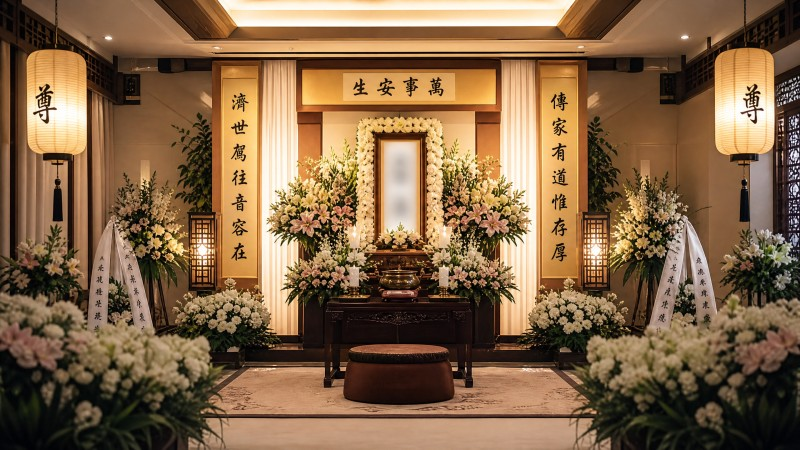
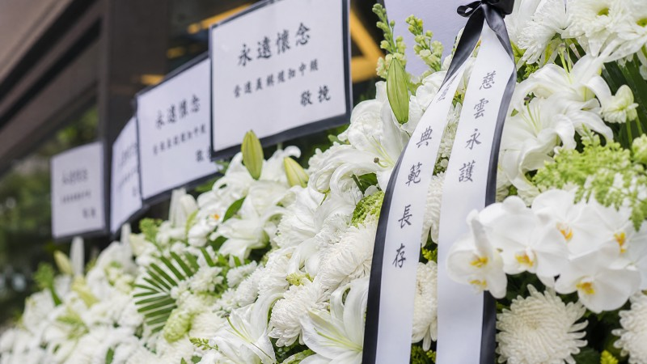
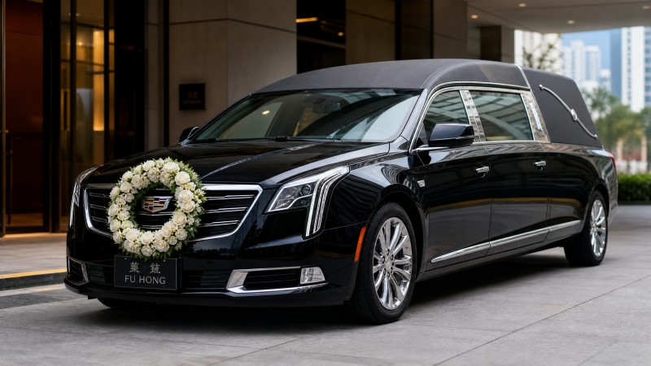
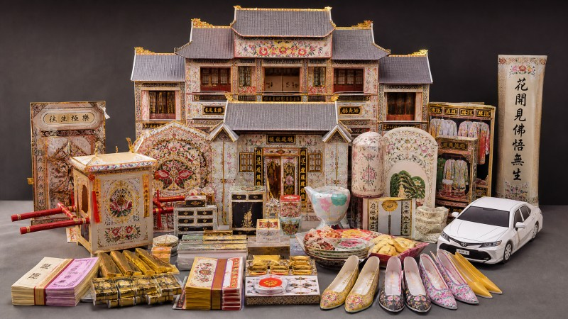
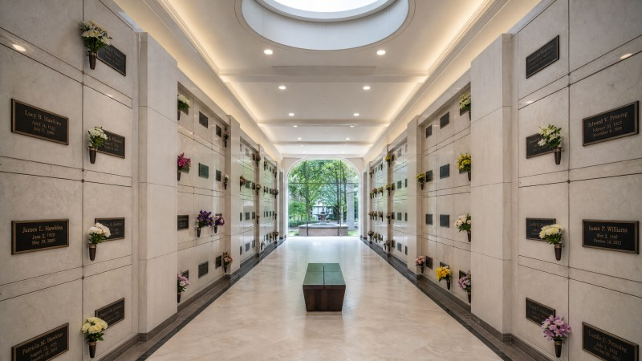

剛收到醫院或安老院通知，不知下一步怎樣做
安念善終 · 陪你安放思念，從容送別所愛
一條龍善終服務安排，陪你妥善處理身後事
由殯儀館安排、宗教儀式、靈車、花牌、紙紮到骨灰後續，我們協助家屬與持牌殮葬商及服務夥伴對接，流程清楚、收費透明、減少徬徨。

實景：合作殯儀館靈廳
此刻你可能需要
如果在徬徨之中不知從何入手，我們可以一步一步陪你梳理。
需要安排殯儀館、死亡證、靈車、法事或告別儀式
家人意見未統一，需要有人清楚解釋流程與預算
身在海外，需要香港本地代為跟進身後事
三步處理流程
清晰流程，減少困惑。從第一個電話開始，我們都會在你身邊。
1
WhatsApp 諮詢
只需一個 WhatsApp 訊息，告诉我们基本情況，我們會立刻安排專人為你跟進，解答疑問、提供建議。
2
協調服務夥伴
根據你的需求，我們與持牌殮葬商及服務伙伴協調安排，包括殯儀館、靈車、法事、花牌等，讓你安心放心。
3
妥善完成安排
全程跟進進度，確保每環都妥當進行。送達花牌會附上相片確認，讓你在遠方也能安心。
服務範圍
由離世起，到骨灰安放，我們協助你把每一件事安排妥當。
🏥
殯儀館安排
協助預約合適的殯儀館、靈廳及告別室，按需要安排靈車接送。
🙏
宗教儀式
佛教、道教、基督教、伊斯蘭教等各式宗教儀式協調，尊重信仰選擇。
🚗
靈車服務
從醫院、家宅或殮房出發，安全將先人送至殯儀館，準時到達。
💐
花牌代訂
各款殯儀花牌代訂，款式多選，即時送達殯儀館，附送相片確認。
🏮
紙紮代訂
各種傳統紙紮品，包括金銀衣紙、紙紮屋車等，依信仰習俗代訂。
⚱️
骨灰後續
骨灰龕位查詢、火化安排、骨灰灑海等後續服務協調。
📋
文件協助
協助準備死亡證、殯葬牌照等相關文件，減緩家屬行政負擔。
🤝
跨區協調
身在海外或外地，我們的團隊代為處理，定期更新情況，安心無憂。
帛事花牌代訂
各款花牌代訂，新鮮花材、莊重得體，直送殯儀館，附送送達相片。

服務計劃
以下為參考價格，實際費用會因應所需服務內容而異。歡迎 WhatsApp 查詢精確報價。
基礎計劃
HK$28,800 起
適合只需要基本殯儀服務的安排
- 殯儀館入殮及停放
- 靈車接送（指定範圍內）
- 基本花牌一個
- 死亡證及相關文件協助
- 法事人員協調（/basic）
最受歡迎
全服務計劃
HK$48,800 起
一條龍全方位殯儀安排
- 基礎計劃所有服務
- 殯儀館靈廳租用（2–3日）
- 花牌 × 2（含送達相片）
- 紙紮套裝代訂
- 宗教儀式協調（佛教／道教／基督教）
- 骨灰龕位優先查詢
高級計劃
HK$68,800 起
尊貴、全面的送別安排
- 全服務計劃所有服務
- 殯儀館 VIP 靈廳
- 花牌 × 4（含送達相片）
- 全套紙紮代訂
- 多宗教儀式安排
- 追思會場地及餐務協調
- 骨灰安置或灑海一站式安排
服務實景
以下為我們實際服務的場景相片，讓你更清楚了解我們的工作環境與服務品質。



為什麼選擇安念善終
🤝 持牌夥伴協作
與持牌殮葬商及專業服務伙伴合作，所有安排符合法規，讓你安心放心。
💰 透明報價
費用清楚列明，不會有隱藏收費。我們會根據實際需要提供適合的選項及預算建議。
🙏 多宗安排
兼容佛教、道教、基督教、天主教、伊斯蘭教等不同信仰的儀式需要，尊重每個家庭的選擇。
💬 WhatsApp 專人跟進
任何時候都能透過 WhatsApp 聯絡我們，專人即時回覆，讓你不在徬徨中獨自面對。
📷 送達相片確認
所有代訂花牌送達後會發送相片確認，即使身在海外也能掌握情況，安心不少。
🌏 離地也能照顧
身在海外或外地？我們可以全權代為處理，定期向你匯報進度，讓你無論在哪裡都能安心。
關於我們
以心待人，以誠處事
「安念善終」相信，每一次送別都值得被溫柔以待。我們深知喪親之痛，因此致力於為每一位家屬提供最貼心、最專業的善終協調服務。
我們的核心價值是「陪伴」。不是冷冰冰的商業交易，而是真真切切在你們最困難的時刻，伸出援手，幫你理清每一步該怎麼辦。
- ❤️ 同理心明白你正在經歷什麼
- 🤲 陪伴式服務每一步都在你身邊
- 📖 透明誠實不藏私、不糊弄
- 🙏 尊重信仰配合各家禮俗文化
兼容各信仰
無論佛教、道教、基督教、天主教、伊斯蘭或其他信仰，我們都能安排合適的儀式。
佛教誦經、法事、往生助念
道教打齋、超度、拜忏
基督教禮拜、追思彌撒
天主教祈福彌撒、終傅聖事
伊斯蘭教淨身、土葬安排
民間信仰传统儀式兼顧現代禮儀
常見問題
更多疑問隨時 WhatsApp 查詢，我們會盡快回覆。
如何開始安排？
只需透過 WhatsApp 或致電給我們，告知基本情況（離世時間、地點、宗教信仰等），我們會立即安排專人跟進，並為你家屬詳細說明整個流程和所需費用。
可以只預訂其中一項服務嗎？
可以。我們提供靈活選擇——無論你只需要代訂花牌、靈車接送、還是完整的殯儀館一站式安排，都可以單獨訂購。
花牌送達後可以確認嗎？
可以的。所有代訂花牌送達殯儀館後，我們會拍攝送達相片發送至你的 WhatsApp，讓你能夠確認花牌的擺放位置及狀況。
如果身在海外，可以代為安排嗎？
完全沒問題。我們很多客戶都在海外，我們可以全權代為處理所有殯儀事宜。過程中我們會透過 WhatsApp 或電郵定期更新進度。
收費是否透明？
是的。所有費用會在服務安排前清楚列出，不會有隱藏收費。如有特殊需求需要額外預算，我們會提前說明並徵求同意。
什麼是殮葬商？你們的合作模式？
殮葬商是指持有香港食物環境衛生署簽發的殮葬商牌照的專業人士。我們與多家持牌殮葬商合作，協助你和他們對接，確保一切安排符合法規並符合你的期望。